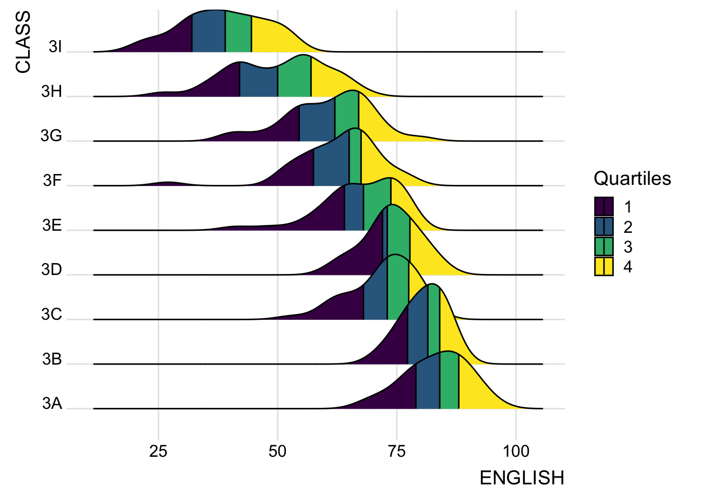
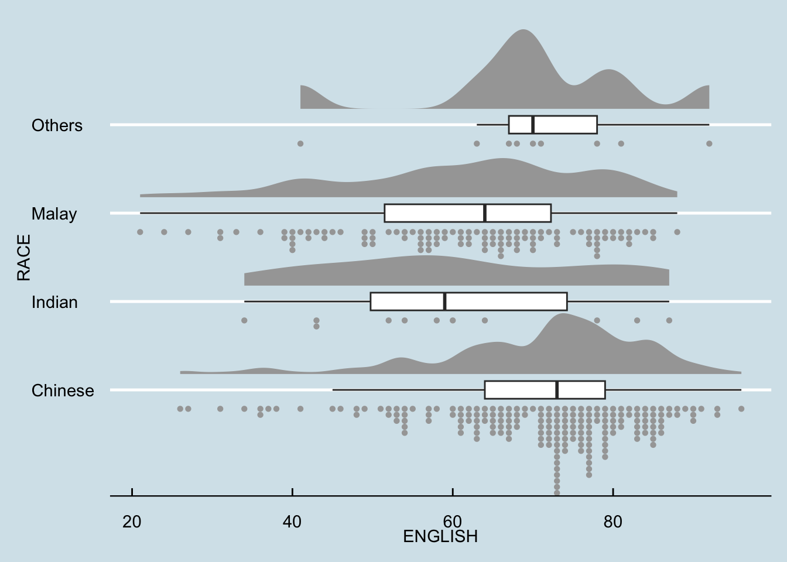

pacman::p_load(tidyverse, ggdist, ggthemes, ggridges, colorspace)In-class Exercise 2: Visualizing distribution
1 Overview
From exercise published on https://r4va.netlify.app/chap09
I learned the following:
Different ways to visualize distribution
Ridgeline plot using
ggridgesRaincloud plot using
ggdists
2 Setup
2.1 Loading the R packages
2.2 Importing the data
exam_df <- read_csv("data/Exam_data.csv")3 Probability Density Graph
3.1 Histogram
ggplot(exam_df, aes(x=ENGLISH)) +
geom_histogram(color = "#1696d2",
adjust = 0.65,
alpha = 0.6)3.2 Probability Density Diagram
It uses geom_density() from ggdist package.
ggplot(exam_df, aes(x=ENGLISH)) +
geom_density(color = "#1696d2",
adjust = 0.65,
alpha = 0.6,)3.3 Alternative design
median_eng <- median(exam_df$ENGLISH)
mean_eng <- mean(exam_df$ENGLISH)
std_eng <- sd(exam_df$ENGLISH)
ggplot(exam_df, aes(x=ENGLISH)) +
geom_density(color = "#1696d2",
adjust = 0.65,
alpha = 0.6,) +
stat_function(
fun=dnorm,
args = list(mean=mean_eng, sd = std_eng),
col = "grey30",
size = 0.8)+
geom_vline(aes(xintercept=mean_eng), color = "#4d5887", linewidth = 0.6, linetype = "dashed")+
annotate(geom = "text",
x = mean_eng - 10,
y = 0.04,
label = paste0("Mean ENGLISH:", round(mean_eng), 2),
color = "#4d5887") +
geom_vline(aes(xintercept=median_eng), color = "#4d5887", linewidth = 0.6) +
annotate(geom = "text",
x = median_eng + 10,
y = 0.04,
label = paste0("Median ENGLISH:", round(median_eng), 2),
color = "#4d5887")4 Ridgeline Plot
Ridgeline plot (sometimes called Joyplot) is a data visualisation technique for revealing the distribution of a numeric value for several groups. Distribution can be represented using histograms or density plots, all aligned to the same horizontal scale and presented with a slight overlap.
It makes sense for distributions with 5 or more groups.
4.1 Plotting ridgeline graph: ggridges method
ggridges package provides two main geom to plot gridgeline plots, they are: geom_ridgeline() and geom_density_ridges().
geom_ridgeline() plots the graph using the height values from the data directly. It is useful when the height values refer to a column directly.
For this particular dataset, it is more appropriate to use geom_density_ridges() as we need to plot the distribution of students’ English score. If we had tallied and aggregated the number of students who scores within score ranges, geom_ridgeline() might be appropriate but it isn’t the case.
Show ggplot2 code
ggplot(exam_df,
aes(x = ENGLISH,
y = CLASS)) +
geom_density_ridges(
scale = 3,
rel_min_height = 0.01,
bandwidth = 3.4,
fill = lighten("#7097BB", .3),
color = "white"
) +
scale_x_continuous(
name = "English grades",
expand = c(0, 0)
) +
scale_y_discrete(name = NULL, expand = expansion(add = c(0.2, 2.6))) +
theme_ridges()
4.2 Varying colors along the x-axis
Sometimes we would like to have the area under a ridgeline not filled with a single solid color but rather with colors that vary in some form along the x axis. This effect can be achieved by using either geom_ridgeline_gradient() or geom_density_ridges_gradient(). Both geoms work just like geom_ridgeline() and geom_density_ridges(), except that they allow for varying fill colors. However, they do not allow for alpha transparency in the fill. For technical reasons, we can have changing fill colors or transparency but not both.
If we need emphasize the actual values with color gradient, using colors is appropriate. However, It may not be necessary when there are fewer ridge graphs, since the farthest graph is still relatively close to the axis.
However, in the plot below, it can be more easily seen that 3I scored lowest, while 3A scored the highest among the different classes. Hence, in this case, colors are really valuable.
Show ggplot2 code
ggplot(exam_df,
aes(x = ENGLISH,
y = CLASS,
fill = after_stat(x))) + # changed from stat() as it is deprecated
geom_density_ridges_gradient(
scale = 3,
rel_min_height = 0.01) +
scale_fill_viridis_c(name = "Temp. [F]",
option = "C") +
scale_x_continuous(
name = "English grades",
expand = c(0, 0)
) +
scale_y_discrete(name = NULL, expand = expansion(add = c(0.2, 2.6))) +
theme_ridges()
4.3 Mapping the probabilities directly into color
Beside providing additional geom objects to support the need to plot ridgeline plot, ggridges package also provides a stat function called stat_density_ridges() that replaces stat_density() of ggplot2.
Figure below is plotted by mapping the probabilities calculated by using stat(ecdf) which represent the empirical cumulative density function for the distribution of English score.
We are using the probabilities from stat(ecdf) in the fill aesthetic of the plot so the probabilities affect the color fill.
Show ggplot2 code
ggplot(exam_df,
aes(x = ENGLISH,
y = CLASS,
fill = 0.5 - abs(0.5-stat(ecdf)))) +
stat_density_ridges(geom = "density_ridges_gradient",
calc_ecdf = TRUE) +
scale_fill_viridis_c(name = "Tail probability",
direction = -1) +
theme_ridges()
4.4 Ridgeline plots with quantile lines
By using geom_density_ridges_gradient(), we can colour the ridgeline plot by quantile, via the calculated stat(quantile) aesthetic as shown in the figure below.
Show ggplot2 code
ggplot(exam_df,
aes(x = ENGLISH,
y = CLASS,
fill = factor(stat(quantile))
)) +
stat_density_ridges(
geom = "density_ridges_gradient",
calc_ecdf = TRUE,
quantiles = 4,
quantile_lines = TRUE) +
scale_fill_viridis_d(name = "Quartiles") +
theme_ridges()
Instead of using number to define the quantiles, we can also specify quantiles by cut points such as 2.5% and 97.5% tails to colour the ridgeline plot as shown in the figure below.
Show ggplot2 code
ggplot(exam_df,
aes(x = ENGLISH,
y = CLASS,
fill = factor(stat(quantile))
)) +
stat_density_ridges(
geom = "density_ridges_gradient",
calc_ecdf = TRUE,
quantiles = c(0.025, 0.975)
) +
scale_fill_manual(
name = "Probability",
values = c("#FF0000A0", "#A0A0A0A0", "#0000FFA0"),
labels = c("(0, 0.025]", "(0.025, 0.975]", "(0.975, 1]")
) +
theme_ridges()
5 Raincloud Plot
Raincloud Plot is a data visualisation technique that produces a half-density to a distribution plot. The raincloud (half-density) plot enhances the traditional box-plot by highlighting multiple modalities (an indicator that groups may exist). The boxplot does not show where densities are clustered, but the raincloud plot does!
The raincloud plot will be generated by functions in ggplot2 and ggdist packages.
5.1 Plotting a Half-eye plot
We will plot a Half-Eye graph by using stat_halfeye() of ggdist package.
It contains a half-density and slab interval graph.
The slab interval is similar to a box plot and it shows the relevant quantiles of the data.
Show ggplot2 code
ggplot(exam_df,
aes(x = RACE,
y = ENGLISH)) +
stat_halfeye(adjust = 0.5,
justification = -0.2)Setting .width = 0, point_colour = NA will remove the slab interval. Slab interval may be useful for some use cases but rendering a box plot or removing it together may be more useful for visualization.
Show ggplot2 code
ggplot(exam_df,
aes(x = RACE,
y = ENGLISH)) +
stat_halfeye(adjust = 0.5,
justification = -0.2,
.width = 0,
point_colour = NA)
5.2 Adding a boxplot
We can replace the slab interval with a narrow boxplot. It provides more aesthetic presentation of the distribution and fills the gap between the half-eye plot and the gridlines.
Show ggplot2 code
ggplot(exam_df,
aes(x = RACE,
y = ENGLISH)) +
stat_halfeye(adjust = 0.5,
justification = -0.2,
.width = 0,
point_colour = NA) +
geom_boxplot(width = .20,
outlier.shape = NA)
5.3 Adding Volume information
The distribution plot so far gives information on the relative distribution. However, it is hard to know the absolute volume within each bin. We can use stat_dots() of ggdist package to generate this.
We will plot it on the same side as the half-eye plot.
Show ggplot2 code
ggplot(exam_df,
aes(x = RACE,
y = ENGLISH)) +
stat_halfeye(adjust = 0.5,
justification = -0.2,
.width = 0,
point_colour = NA) +
geom_boxplot(width = .20,
outlier.shape = NA) +
stat_dots(side = "left",
justification = 1.2,
binwidth = .5,
dotsize = 2)
By adding the volume dots, we can see that the Others plot actually has less observations that the other Race values, even though the curve looks taller. It reduces misinterpretation of the data.
5.4 Finishing touches
Lastly, we can flip the coordinates and add a theme to make it more presentable.
ggplot(exam_df,
aes(x = RACE,
y = ENGLISH)) +
stat_halfeye(adjust = 0.5,
justification = -0.2,
.width = 0,
point_colour = NA) +
geom_boxplot(width = .20,
outlier.shape = NA) +
stat_dots(side = "left",
justification = 1.2,
binwidth = .5,
dotsize = 1.5) +
coord_flip() +
theme_economist()
6 Reflections
Although the Probability Density Graph, Ridgeline Plot, and Boxplot are effective for presenting information about the distribution within a group. However, the information may not be enough and can even be misleading if multiple groups are plotted within a single graph. Hence, volume graph is a very important addition as it shows how each group compare among each other.
This is my first time to encounter this kind of visualization and I think it is very powerful. Left and right Raincloud plots can also be presented side by side to compare to data subsets, like in a senior, Kylie Tan’s work.
Although this visualization is powerful, I must take care to not overuse it even if I like it. It is always important to be clear on what message I want to communicate and use that to judge if this visualization is appropriate.